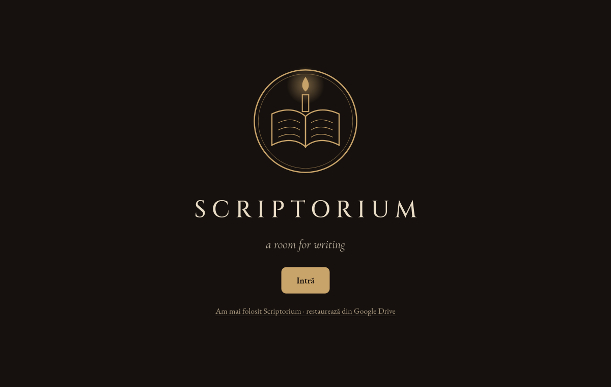
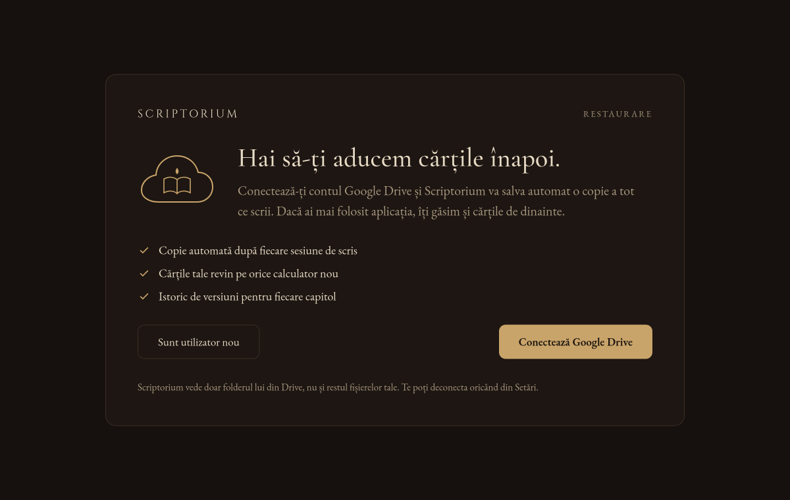
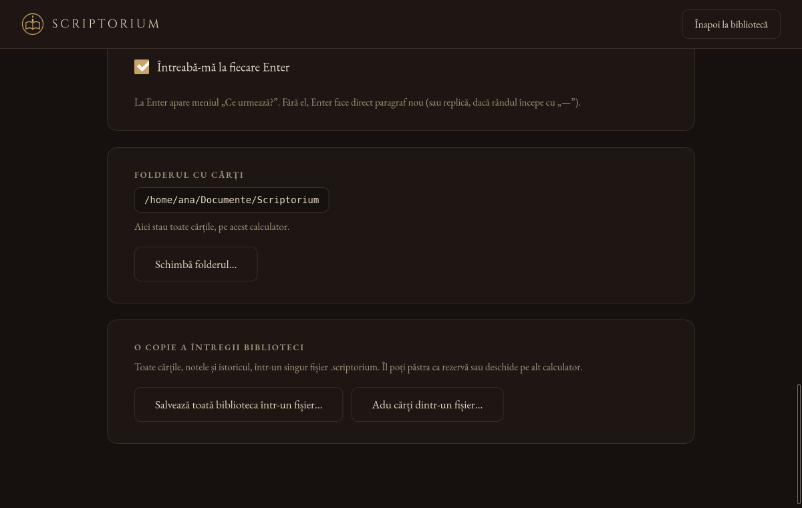

Cum instalezi Scriptorium
Scriptorium e un singur fișier de descărcat. Nu trebuie să instalezi nimic altceva: fonturile, dicționarele și programul care face PDF-urile sunt deja înăuntru.
Toate versiunile sunt aici: github.com/Dalex91/scriptorium-releases/releases
Ubuntu (și Debian, Linux Mint, Pop!_OS)
- Descarcă fișierul care se termină în
_amd64.deb. - Dă dublu-clic pe el. Se deschide App Center (sau „Instalare software”).
- Apasă Instalează și scrie parola calculatorului când ți-o cere.
- Scriptorium apare în lista de aplicații, cu iconița cu lumânarea. Îl poți fixa în bară cu clic-dreapta → „Fixează în bară”.
Dacă dublu-clicul deschide arhiva în loc de App Center: clic-dreapta pe fișier → „Deschide cu” → „Instalare aplicații”.
Orice alt Linux (AppImage)
- Descarcă fișierul care se termină în
.AppImage. - Clic-dreapta pe el → Proprietăți → Permisiuni → bifează „Permite executarea ca program”.
- Dublu-clic pe el și pornește.
Pe Ubuntu 22.04 și mai noi, dacă nu pornește, instalează o dată libfuse2: sudo apt install libfuse2. Varianta .deb nu are nevoie de asta.
Windows 10 și 11
- Descarcă fișierul care se termină în
_x64-setup.exe. - Dă dublu-clic. Dacă Windows spune „Windows a protejat computerul”, apasă Mai multe informații → Rulează oricum (aplicația nu are încă semnătură Microsoft).
- Urmează pașii. La final, Scriptorium e în meniul Start.
macOS
- Descarcă fișierul
.dmg:_aarch64.dmgpentru Mac cu Apple M1/M2/M3/M4,_x64.dmgpentru Mac cu Intel (în meniul → „Despre acest Mac” scrie ce procesor ai). - Deschide-l și trage Scriptorium în folderul Aplicații.
- Prima dată: clic-dreapta pe Scriptorium → Deschide → Deschide (aplicația nu are încă semnătură Apple).
Prima pornire

- Prima dată în viața ta? Apasă Intră și alege-ți numele, tema și limba.
- Ai mai scris în Scriptorium pe alt calculator? Apasă „Am mai folosit Scriptorium · restaurează din Google Drive”.

Apasă Conectează Google Drive. Se deschide browserul. Alege contul tău Google și apasă Continuă. Scriptorium vede doar folderul lui din Drive, nu și restul fișierelor tale. Te întorci în aplicație și îți alegi cărțile: ele revin cu tot cu note, istoric și preferințe (numele, tema, limba).
Fără internet sau fără Google Drive
În Setări, la „O copie a întregii biblioteci”:
- Salvează toată biblioteca într-un fișier… face un singur fișier
.scriptoriumcu toate cărțile. Îl poți pune pe un stick sau trimite pe e-mail. - Adu cărți dintr-un fișier… aduce cărțile pe calculatorul nou. Poți și să dai dublu-clic pe fișierul
.scriptorium, iar Scriptorium te întreabă dacă le aduce.
Nu se pierde nimic: dacă o carte există deja și e diferită, varianta ta rămâne, iar cealaltă e pusă deoparte în folderul conflicts.

Actualizări
Când apare o versiune nouă, Scriptorium îți spune discret în bibliotecă: „E disponibilă o versiune nouă · Actualizează”. Apeși, aștepți câteva secunde și aplicația repornește. Poți și să apeși Mai târziu. Nu te întrerupe niciodată în timp ce scrii.
Pe Ubuntu, la varianta .deb, actualizarea îți cere o dată parola calculatorului, ca orice instalare.
Dezinstalare
Dezinstalarea șterge doar aplicația. Cărțile rămân în folderul lor (de obicei Documente/Scriptorium) și în Google Drive.
- Ubuntu: App Center → Instalate → Scriptorium → Dezinstalează (sau
sudo apt remove scriptorium). - Windows: Setări → Aplicații → Scriptorium → Dezinstalare.
- macOS: trage Scriptorium din Aplicații la Coș.